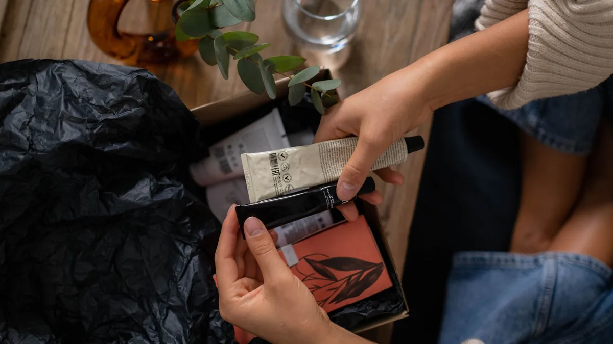
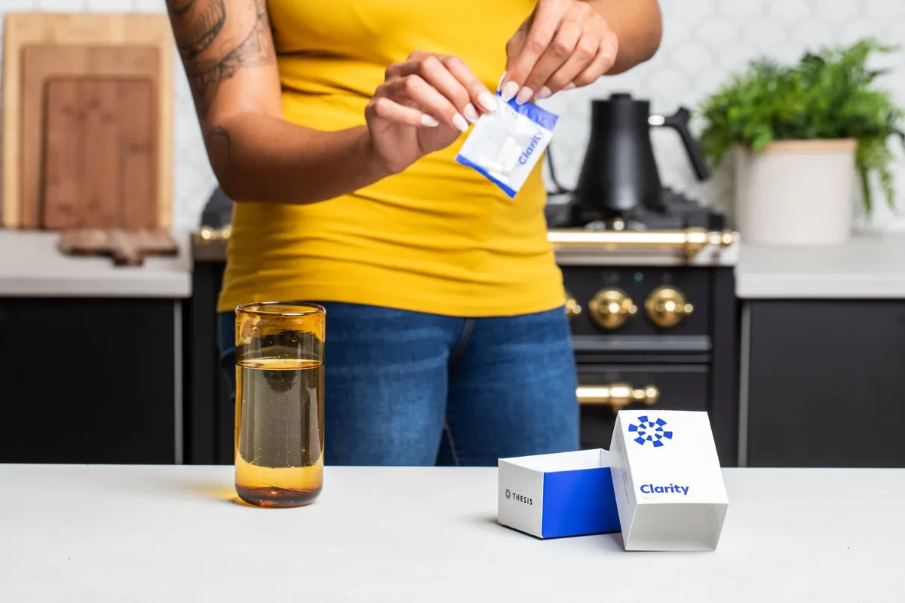

UGC for brands
Types of UGC Videos: The 5 Formats Brands Actually Run

The 5 types of UGC videos at a glance
You've got a business to run, so here is the short answer first. The types of UGC videos I make come down to five formats:
- Talking head: one person on camera, talking straight to you about one thing.
- Yap style: casual, chatty storytime about the product.
- Lifestyle: the product living its best life in a real kitchen, garden or car.
- Product demo and unboxing: open it, use it, show it working.
- B-roll: hands, pours, textures and close-ups, with no talking at all.
If the whole idea is new to you, start with my guide to UGC for brands, and if you're still deciding between a UGC creator and an influencer, read UGC vs influencer first.
Below, I walk through each of these UGC video formats: what it looks like, what it does, where it tends to run, and how to brief it. Then we'll match the formats to the jobs you need done, look at where Gen X households actually spend their money, and cover the rules that apply to every single video. Grab a coffee. This is the good stuff.
Talking head: one message, straight to camera
What it looks like: a face in frame, eyes on the lens, one clear message. No fancy set required. Think of a friend calling you to tell you about the thing she can't stop using.
What it does: it puts a real face and a real voice on your product. It's the most direct way to answer one question a buyer is already asking, like "does this actually fit in my morning routine?"
Where it runs: as a paid ad on TikTok or Meta, on a product page, or inside an email. If you want to run it as an ad through the creator's own account, that is a separate permission, and it belongs in writing. I cover that in UGC usage rights and TikTok Spark Ads.
How to brief it: give one message, not seven. Tell the creator who the video is talking to, the one thing the product does for that person, and anything that is off limits. Leave room for the creator's own words. A script that reads like a press release sounds like one on camera, too.
Yap style: casual, chatty storytime
What it looks like: yap style is the talking head's chatty cousin. It's looser and more conversational, closer to storytime than to a pitch.
What it does: it shows personality. Viewers get to know the person talking, not just the product, which is exactly where GenX humor earns its keep.
Where it runs: mostly in feeds, where a video that looks like a normal post fits in, and as ads built to feel native to the platform.
How to brief it: send talking points and the must-say facts, not a word-for-word script. Flag anything the creator must not say. And remember the honesty rule further down this page: storytime has to be a true story. No made-up experiences, ever.
Lifestyle: the product in a real setting
What it looks like: the product in the places people actually use it. A kitchen counter. A garden bed. A cup holder. The categories I create for include kitchen and kitchen appliances, planting and gardening, pets and cars, plus food, supplements, makeup, skin care and hair care.
What it does: it shows fit. Grown-up buyers want to see how a thing works in an ordinary Tuesday, not floating in white space like a 1990s catalog photo.
Where it runs: ads, social posts, product page galleries and email.
How to brief it: tell the creator which setting matches your buyer, the moment of use you care about (the morning rush, the weekend yard work, the drive), and anything that must or must not be in frame.
Product demo and unboxing (with UGC video examples)
What it looks like: open the box, show what's inside, use the product and show it working. Close-ups do the heavy lifting here.
Here are two UGC video examples from my own TikTok:
- Hydration sticks: an unboxing-style demo with the stick pack, the box and the glass.
- Beef tallow skin care: an extreme close-up demo, built to stop the scroll.
TikTok Shop · Product demo
Hydration sticks
Unboxing-style demo: the stick pack, the box and the glass.
Cover frame: Trish holds up a hydration drink stick pack beside its box
Watch on TikTok: Hydration sticks (opens in a new tab)Skin care · TikTok Shop
Beef tallow skin care
Extreme close-up skin care demo. Built to stop the scroll.
Cover frame: an extreme close-up of Trish's eye for a beef tallow skin care video
Watch on TikTok: Beef tallow skin care (opens in a new tab)These are my own TikTok posts, shown as samples of my work. TikTok Shop videos can earn me a commission when viewers buy through them. A product appearing here does not mean that brand hired me.
Both of these are my own posts. They are not client work, and a product showing up in one of my videos does not mean that brand hired me.
What it does: it shows what the product does, in plain sight, which is the whole point of a demo.
Where it runs: TikTok Shop listings, product pages and ads.
How to brief it: ship the product early enough for the creator to actually use it, because the rules below require real experience. List the features to show, the claims your brand can back up, and the claims nobody may make. For supplements and food, the demo shows the product and how you make it. It never promises a health result.
B-roll: hands, pours, textures and close-ups
What it looks like: UGC b-roll is footage with no talking. Hands opening a jar. Powder going into a glass. A cream's texture on a fingertip. A slow close-up of the label.
What it does: it is raw material. Your editor or ad team cuts it into new ads, puts it under new hooks, and uses it on product pages. When an ad gets tired, fresh b-roll lets you build a new version without starting from scratch.
Where it runs: everywhere your editor puts it, which is why b-roll is the most flexible thing you can order.
How to brief it: send a shot list. Name the clips you want (pour, open, apply, close-up of the label), say whether you need vertical or horizontal, and say how many takes of each. Then let the creator fill in the rest.

Which UGC video format for which job
Every format has a job. Here is the cheat sheet I'd hand a brand that is ordering UGC videos for the first time. The disclosure tips come from the Federal Trade Commission's Disclosures 101 for Social Media Influencers (opens in a new tab).
| Format | What it looks like | Best job | Disclosure tip |
|---|---|---|---|
| Talking head | One person on camera, talking straight to the viewer about one thing | Delivering one clear message or answering one common question | Say it is an ad, or that the product was free, inside the video itself |
| Yap style | Casual, chatty storytime about the product | Showing personality and a friend-to-friend tone | The story has to be true, and the disclosure goes in the video, not only the caption |
| Lifestyle | The product in a real setting: a kitchen, a garden, a car | Showing how the product fits into an ordinary day | Free or discounted product counts as a connection, so disclose it too |
| Product demo and unboxing | Opening the box, using the product and showing it work | Showing what the product does, in plain sight | Only show and describe what the creator actually tried |
| B-roll | Hands, pours, textures and close-ups, with no talking | Raw footage an editor cuts into new ads and product pages | If the finished ad is an endorsement, the disclosure goes in the finished ad |
If you only remember one thing from that table: a talking head is a single message, and b-roll is a pile of building blocks. Most brands need some of both.
Matching formats to what grown-ups buy
I'm a GenX creator, so let's talk about my people. Pew Research Center defines Generation X as people born from 1965 to 1980 (opens in a new tab). The U.S. Bureau of Labor Statistics sorts households by the birth year of the person who heads them, and in its 2024 Consumer Expenditure Survey tables (opens in a new tab), households headed by Gen X were 26.7% of all US households but accounted for 32.9% of all consumer spending.
In some categories that share runs even higher. Gen X households accounted for 34.1% of spending on pets, 33.7% on apparel and services, 33.3% on entertainment, and 33.1% on personal care products and services. Food at home (31.3%) and household furnishings and equipment (30.9%) come in a little under a third.
Here is how I'd line those categories up with the formats and the niches I work in:
- Personal care (makeup, skin care, hair care): product demos and close-up b-roll show texture and application, and a talking head can explain what you like about it, in honest terms.
- Pets: lifestyle videos, because a pet product makes the most sense in a real home.
- Food at home and supplements: demos and b-roll pours. Show the product, how you make it and how it tastes. Skip the health promises (more on that below).
- Kitchen and appliances: demos that show the thing working, plus lifestyle footage on a real counter.
- Plants, gardening and cars: lifestyle footage in the garden bed or the driveway, plus b-roll you can reuse all season.
One honest caveat: these figures show where Gen X household money goes. They do not tell you what any one video will sell. That's what testing is for.
Rules for every format
Different formats, same rules. These apply to a talking head and a b-roll pour alike.
- Disclose inside the video. The FTC's guidance for influencers says the disclosure should be in the video itself and not just in the description. It also says free or discounted product counts, so a gifted box needs a disclosure too. Plain words like "ad" or "sponsored" do the job. Read Disclosures 101 (opens in a new tab) for the full list.
- Real experience only. The same FTC page says you can't talk about your experience with a product you haven't tried. So no creator should describe results they did not get, and no brand should ask for that.
- Supplements stay in their lane. The FTC's Health Products Compliance Guidance (opens in a new tab) says a brand should not make claims through testimonials that it couldn't back up if it made them directly. Supplement labels that make structure and function statements carry the FDA disclaimer that the product is not intended to diagnose, treat, cure, or prevent any disease (opens in a new tab). So a supplement or drink video should show the product and how it's used, not make a health claim.
- Use TikTok's disclosure setting. TikTok's Branded Content Policy (opens in a new tab) treats content that promotes a brand in exchange for payment or any other incentive as branded content. Creators are asked to turn on the platform's content disclosure setting for it, and the policy makes the creator responsible for following the law.
A quick note so nobody gets the wrong idea: this is general information, not legal advice. If your product makes health claims, run your scripts past your own counsel. And for the record, I don't make videos for alcohol, tobacco or gambling brands.
Order a mix, not one video
One video is one swing. A mix of formats gives you hooks to test, a story to tell and footage to rebuild ads from when the first version wears out. Your talking head carries the message, your demo shows the product working, your lifestyle clips show it in a real home, and your b-roll keeps your editor stocked.
That's also how I like to work. My preferred setup is a batch of videos plus b-roll, delivered to a shared Google Drive folder, on a monthly retainer. It keeps fresh footage coming without anyone starting from zero each month. What I don't do is "canvas" UGC, where a creator builds and runs a brand-new TikTok or Instagram account and posts to it constantly.
How many videos should you order? Honestly, it depends on how many angles you want to test and how often you launch new ads. A brand that refreshes ads often needs more videos and more b-roll than a brand that runs the same ad for months.
Want to see the formats before you decide? Browse my portfolio, read how to turn these videos into UGC ads with hooks that land, and when you're ready, see how to work with me.
Questions people ask
What are the main types of UGC videos?
The five I make are talking head (one message, straight to camera), yap style (casual, chatty storytime), lifestyle (the product in a real setting), product demo and unboxing (showing it work), and b-roll (hands, pours, textures and close-ups with no talking).
What is UGC b-roll?
UGC b-roll is footage with no talking: hands opening a package, a powder going into a glass, a texture, a slow close-up of a label. Editors cut it into new ads, put it under new hooks and use it on product pages.
How many UGC videos should a brand order each month?
There is no magic number. It depends on how many hooks and angles you want to test and how often you launch new ads. A brand that refreshes ads often needs more videos and more b-roll than one that runs the same ad for months.
References
- Table 2602. Generation of reference person: Shares of annual aggregate expenditures and sources of income, 2024 (opens in a new tab). U.S. Bureau of Labor Statistics, Consumer Expenditure Surveys.
- Where Millennials end and Generation Z begins (opens in a new tab). Pew Research Center.
- Disclosures 101 for Social Media Influencers (opens in a new tab). Federal Trade Commission.
- Branded Content Policy (opens in a new tab). TikTok.
- Health Products Compliance Guidance (opens in a new tab). Federal Trade Commission.
- 21 CFR 101.93: Certain types of statements for dietary supplements (opens in a new tab). Legal Information Institute, Cornell Law School (Code of Federal Regulations).
Keep reading
Start here
UGC for Brands: The Grown-Up Guide to Creator Videos That Sell
What UGC means for a brand, where it runs, which rights to get in writing, and why households headed by Gen X are worth a creator who looks like them.
UGC Ads That Stop the Scroll: Hooks, Scripts and Real Examples
How a UGC ad is built, beat by beat: the hook, the script, the demo and the disclosure. Plus real hook examples from my own videos and the claims a brand can never put in a creator's mouth.
UGC vs Influencer Marketing: What You Are Really Paying For
A UGC creator makes content for your channels. An influencer posts on theirs. Here is how to tell which one your brand actually needs, plus rights and disclosure basics.